游戏系统策划 / 关卡策划
让规则成为可感知的体验。
我是李嘉骏，游戏设计硕士在读，求职方向为系统策划与关卡策划。关注玩法规则、战斗节奏与空间引导，并用 UE5 和 Unity 验证可玩的体验。
项目索引
玩法系统、战斗遭遇与关卡设计
蝶梦 Butterflydream
类魂 ARPG 中，战斗要如何让玩家读懂每一次出手和受击？
团队项目 · 2024
Unreal Engine 5
玩法实现 / 战斗反馈 / UI
实机流程
完整游玩演示设计意图
项目以探索、收集武器与近战对抗为核心。关卡通过逐步出现的敌人与空间目标，引导玩家熟悉战斗节奏，再进入更高压力的首领战。
我的工作
参与武器与道具玩法实现，制作菜单、加载、玩家信息和新手提示；重点调试攻击前摇、命中瞬间、受击方向、硬直与音画反馈，让动作结果更容易辨认。
迭代与交付
整合动画、粒子效果、音效与交互物件，并参与 Steam 版本更新、本地化及问题排查。这里展示的战斗与场景设计由团队共同完成。
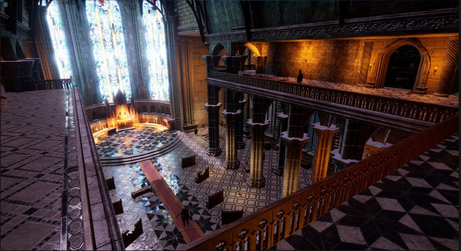
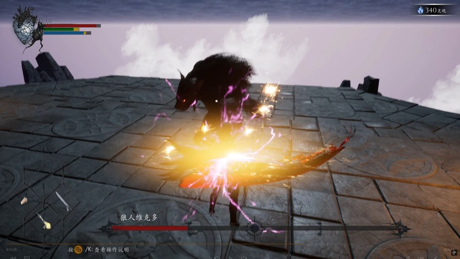
Lotus
在没有死亡的世界里，玩家如何通过选择建立自己的立场？
团队项目 · 2022
Unity 3D
策划 / 写作 / 角色 / 音乐
实机流程
完整游玩演示 · 约 40 分钟世界与目标
肉体不死改变了社会秩序和意识形态。玩家以失去自我认知的角色进入城市，通过 NPC 对话、掷骰判定和任务线逐步拼合记忆，最终引领他人走向高塔。
叙事结构
以碎片化叙事呈现同一历史事件的不同视角。对话选项、能力条件与任务解锁交织，给予玩家自行判断与选择的空间。
我的工作
参与玩法规划、角色设计、对话系统、代码与背景音乐。撰写的游戏对话、设定和修订内容合计超过 20 万字，并用人物关系与任务节点整理世界结构。
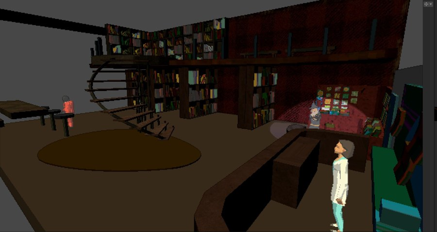
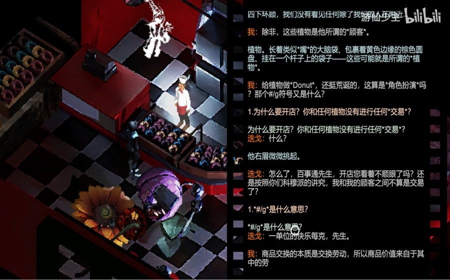
Project PG
用地形、路径与火力配置组织一场逐步升级的机甲战斗。
团队项目 · 2024
Unreal Engine 5
关卡 / 地形 / 特效 / 程序
实机流程
完整游玩演示体验目标
玩家操纵机甲穿过荒漠城市，配置主、副武器，清除当前区域敌人后继续推进。线性路径与递增的敌人压力帮助玩家逐步掌握操控与火力。
空间组织
道路与建筑引导前进方向，城市中心的建筑逐渐增高、变密；沙丘、废弃车辆与残骸交代战场状态，并形成不同的视线和交战距离。
我的工作
参与关卡、地形、特效与程序制作。调节机甲移动的重量感与响应，制作沙尘和环境反馈，并将武器信息、弹药与锁定提示整合进战斗界面。
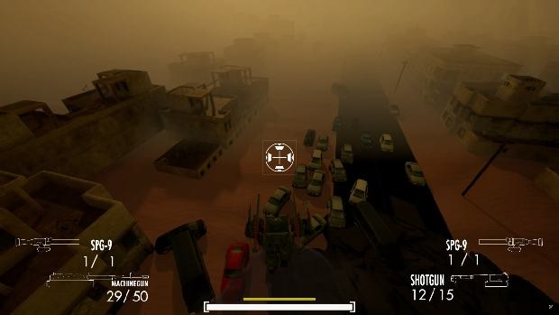
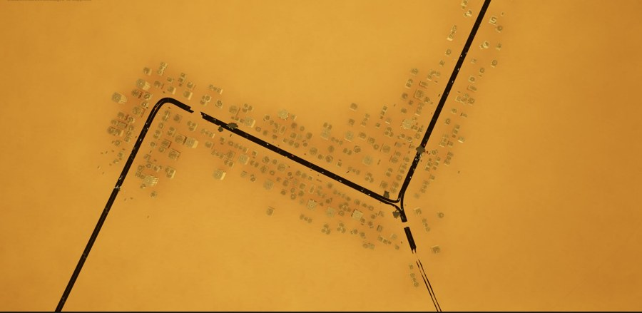
Mist
把云当作画布，让玩家在虚拟天空中即时创造与观察。
个人项目 · 2024
Unreal Engine 5 / Meta Quest
粒子 / 场景 / VR 交互
VR 实机演示
体验流程设计意图
以简单直接的感官交互取代复杂任务。玩家通过 VR 手柄在空中绘制云雾，并随时抬头观察自己生成的天空，体验自由创作。
交互方式
手柄射线与面板交互，实时输入改变云层形态。云雾效果从二维雾层扩展到有厚度的立体形态，以维持空间中的体积感。
我的工作
独立完成粒子系统、场景布置、VR 环境配置与交互验证，在设备中反复检查云雾效果和手柄操作的反馈。
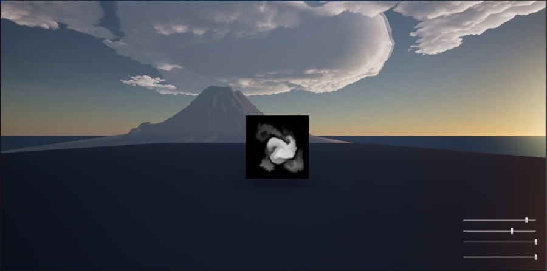
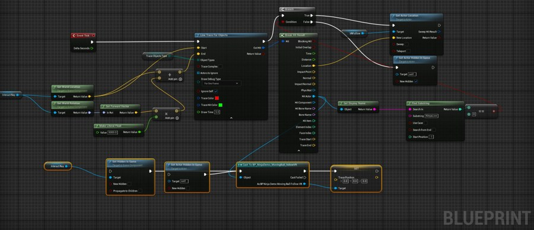
Monster Ball
让球体差异、战斗反馈和局内成长形成清晰的选择。
团队项目 · 2025
Unity · 演示稿名 CUPI
系统实现 / 战斗反馈
成长结构
参与怪物生命、金币、积分、遗物与里程碑等局内内容，梳理玩家在一局中的资源获得与阶段反馈。
球体识别
完善 Impact、Half、Full Ball 的视觉区分，使不同球体的作用在发射与命中时更容易被玩家识别。
我的工作
制作血条、伤害数字、命中与死亡反馈，配置发射及怪物音效和 BGM 切换，并补充故事掉落信息。
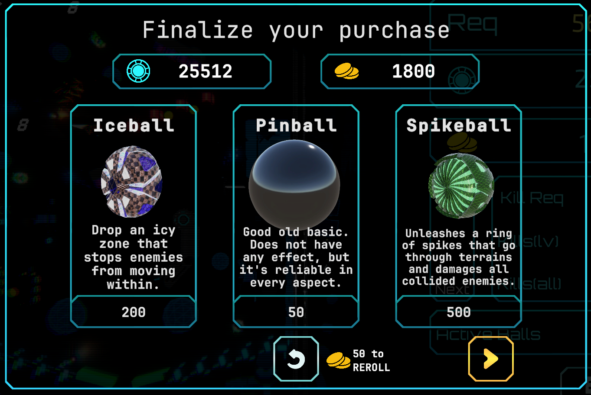
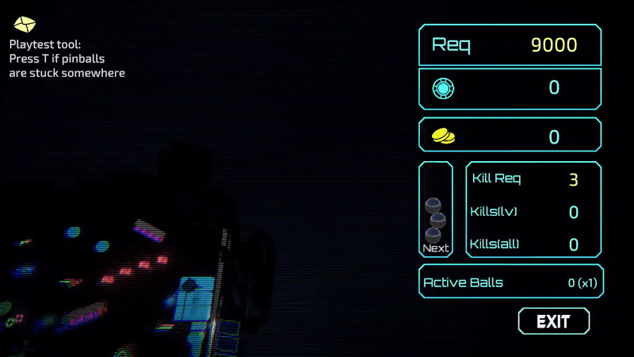
Scrapped
用敌人生成规则和波次变化控制竞技场的战斗压力。
团队项目 · 2026
Unreal Engine 5
敌人系统 / 遭遇设计
实机流程
完整游玩演示遭遇节奏
搭建可配置的敌人生成、波次与竞技场触发逻辑，调试生成规则，让战斗压力随遭遇过程变化。
信息呈现
完善敌人导航、生命值和武器 HUD，让玩家在移动与交战时看清状态和可用资源。
我的工作
补充敌人动画、闪电特效及菜单界面，联动战斗规则与视觉反馈，检查遭遇的可读性。
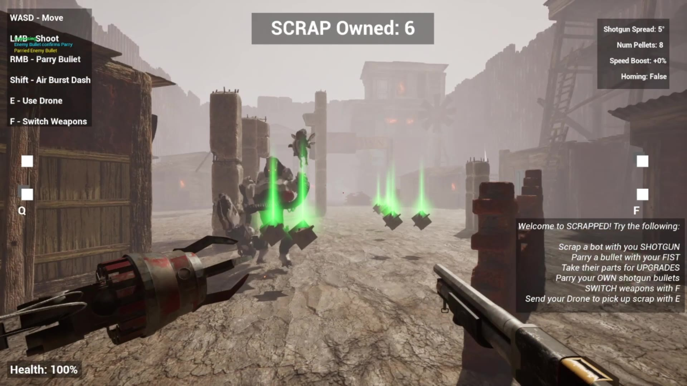
Let's Go Gambling
下注能带来收益，也会把玩家推入更高的追击压力。
团队项目 · 2026
Unreal Engine 5
玩法规则 / 风险收益
实机流程
完整游玩演示核心循环
围绕筹码投入与骰子碰撞组织下注过程，让玩家在继续投入和应对威胁之间作出判断。
压力来源
安保 NPC 的生成和追击形成动态风险；通过速度与伤害参数调节压力强度。
我的工作
实现筹码投入、骰子碰撞和安保 NPC 生成逻辑，并调整敌人速度与伤害，验证收益和风险的取舍。
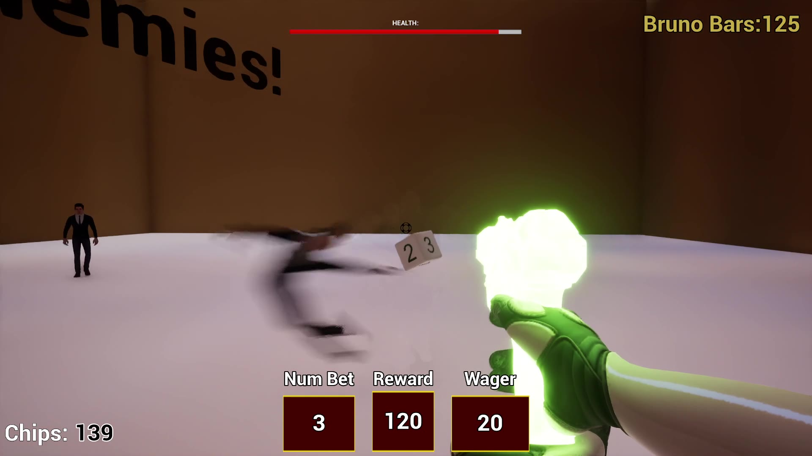
ARKShark
用一个可玩的第三人称原型检验战斗、反馈和关卡流程。
个人项目 · 2026
Unreal Engine 5
独立玩法原型
玩法框架
独立搭建鲨鱼主题第三人称原型，整合敌人、地图流程与玩家界面。
战斗反馈
制作投射物轨迹、火焰与爆炸反馈，让攻击行为与命中结果在场景中有明确表现。
持续验证
将玩法模块接入可运行流程，持续调试交互、战斗信息和视觉反馈。
实机画面待补充；此处仅展示已核实的项目内容。
Shadow Magic
在幕布、聚光灯与卡牌平台之间，推进一段舞台式闯关体验。
团队项目 · 2026
Unity
平台闯关 / 关卡呈现
实机流程
完整游玩演示可见玩法
玩家操纵角色跨越平台和障碍，在连续关卡中寻找前进路线。游玩视频呈现了多个 Act 的推进过程。
视觉组织
红色幕布、聚光灯和悬浮卡牌构成一致的舞台语汇，帮助玩家辨认角色位置、可落脚区域与移动方向。
关卡推进
不同 Act 更换平台组合与障碍位置，在延续舞台视觉主题的同时，让移动路线保持变化。
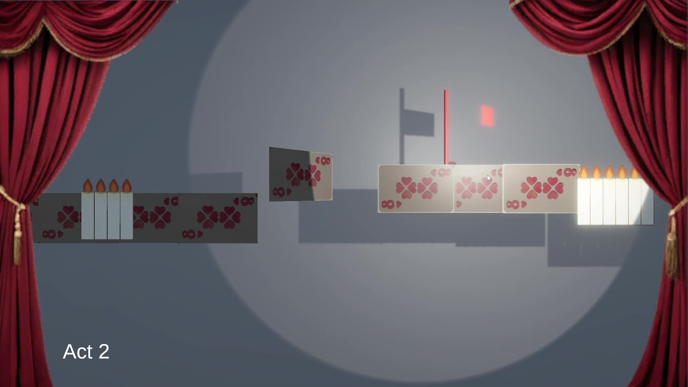
ABOUT
从规则与空间出发，回到玩家感受。
我目前在罗切斯特理工大学攻读游戏设计硕士，曾在北方工业大学学习数字媒体技术。求职方向为游戏系统策划与关卡策划，项目涉及局内成长、战斗遭遇、叙事探索及空间交互。
我关注规则如何推动选择，关卡如何引导行动，以及玩家能否及时理解系统反馈；通过可玩的流程反复验证这些设计目标。